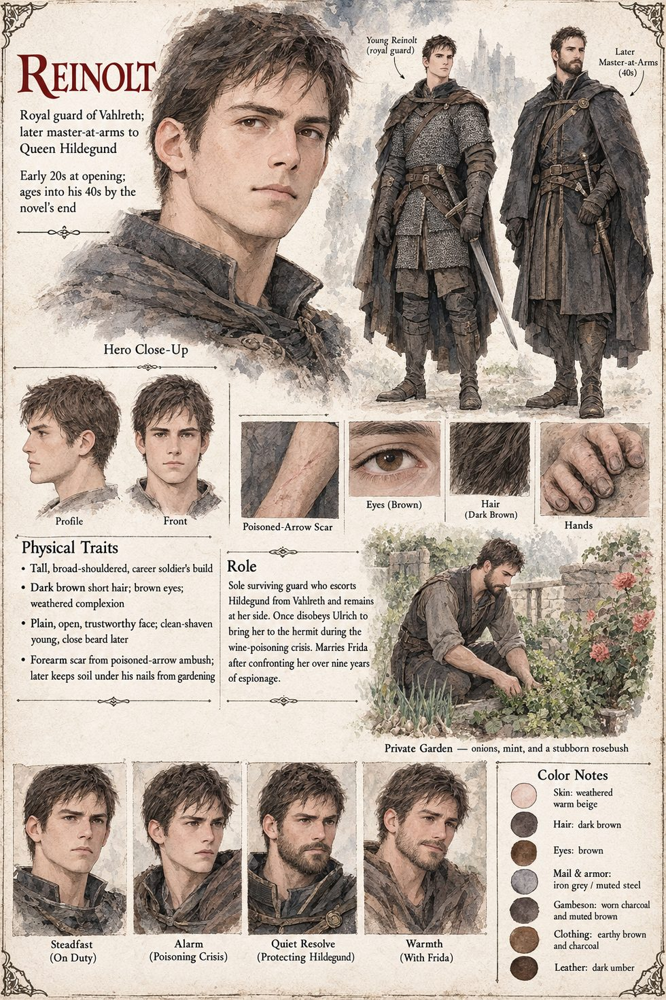

Reinolt
Guard of Vahlreth, later master-at-arms to Queen Hildegund · six years on her guard when the palace burns · early twenties at the opening by his sheet · keeps a garden behind the old armory
A guard of the royal household who has watched over Hildegund for six years when the palace burns, and who goes through the postern at her shoulder with Adalger three steps behind. At the second river an arrow takes him in the shoulder, a scar he will carry and be almost proud of. What he cannot put down is kneeling afterwards in the wet bracken and being sick, not from the wound but from watching a man he had shared a mess table with for six years fold sideways into the mud without any of the ceremony the songs would later give him. His hands do not stop shaking until well past the river, and he tells no one, which the songs also fail to mention. When Hildegund asks how bad her own wound is, he says Bad enough that lying to you would be its own kind of cruelty, and tells her the rest plainly: that he does not expect her to see the following sunset.
He is the first to understand what the ford will cost, and does not learn what the hermit is for a great many years. He builds, over many nights, a theory in which Vara was once a soldier of real skill, a disgraced knight or a mercenary who lost his taste for killing, and the manuscript calls it “entirely reasonable” and “entirely wrong”. At Hartenmark's gate the hermit gives him instructions and no keepsake: stop picking at the cut in his forearm, and tell no one, not even the girl he is sworn to protect, how he got it, since the truth would only compete with a better story already halfway invented. Over the nine years that follow Reinolt rides north twice a year to sit by a fire and say almost nothing to a man who says almost as little back, the most restful arrangement either has access to anywhere in the world.
At Hartenmark he is the one who asks, the night before she lays the granary embezzlement before the council, whether she means to ruin Baldric quietly or publicly, since the two cost her nothing either way, and who offers no opinion on anything she does for the better part of a season afterwards. In her fifth and seventh winters she orders the mule saddled for the north road and he holds the bridle; both times she says the weather looks uncertain, and he, who knows exactly what the weather looks like, leads it away without a word. Behind the old armory is a strip of ground nobody else at court knows of, where he has grown onions, mint and one stubborn rosebush that has never bloomed properly and that he refuses on principle to dig up. It is the only place his hands can be usefully occupied while the rest of him works out what he wants to say.
When the wine goes wrong he is two seats down with his own cup untouched, and it is he who walks out through the gate to fetch the hermit rather than send a rider, since a rider would need telling why. Ulrich forbids the journey outright: Every wall in this city exists to keep her alive. Reinolt answers The walls did not stop the wine, and takes her anyway, the first order of Ulrich's he has disobeyed in nine years, pacing the length of her litter for the whole two hours. When Frida's confession comes he finds her three days later in the garden, asks without looking up from mint he is not weeding how long she has known he comes there, and then the one question he came to ask: whether she loved him for the whole of it, or only some smaller, harder-to-locate part. The whole of it, she says, which is either the truest thing I have ever told anyone, or the most convenient lie I have ever told myself. He says Good, and Neither have I. The rosebush blooms for the first and only time the spring after they marry. He serves as master-at-arms through the whole of Hildegund's reign, and tells the few who ask that a complicated household is easier to guard than a simple one, since everyone in it has stopped pretending to be anything other than exactly as complicated as they are. When Vara asks the queen whether she is the queen now, he very nearly fails to turn his laugh into a cough in time.
The manuscript gives him no appearance. The sheet's short dark-brown hair, brown eyes and plain, open face are its own, as is its early-twenties age band; it draws him in guard's mail as a young man and, in his forties, in a dark cloak with a close beard. It labels a forearm scar “poisoned-arrow”, where the manuscript puts the arrow in his shoulder and the forearm cut at the ford.
“The walls did not stop the wine.”
Appears In

Related Subjects


Related Records

In a burning corridor, with Reinolt at her shoulder and Adalger three steps behind, Hildegund feels the ceiling ahead go orange and the Hereditary Marker wake. It strikes through every branch that ends with her dead and leaves her one number: left.

At the second river Adalger dies mid-sentence with an arrow in the gap of his cuirass, and a third arrow, Hagen's, finds Hildegund low in the side. Reinolt takes an arrow in the shoulder, and the number turns northeast, toward the hermit in the forest.

In the shack in the forest Vara says one word, In, and closes Hildegund's wound with a paste the colour of river clay. Reinolt will call it magic for the rest of his life. What it was, the manuscript says, was competence: old, unhurried and entirely explicable.

Twenty men wait at the ford. For the first minutes Vara fights like a very good man with a very good sword beside Reinolt, bleeding from a cut forearm he has not yet noticed; then Vara lets it go, and Hildegund, up on the rocks, watches twenty and two become an arithmetic error.